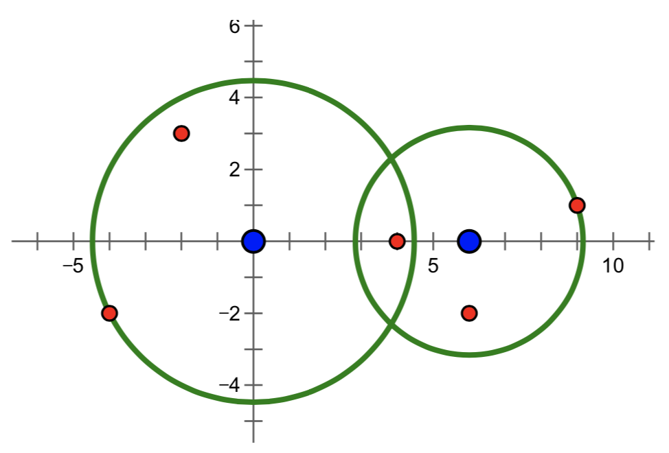

【提示】
两个点 ($x_1, y_1$)、($x_2, y_2$) 之间距离的平方是 $(x_1−x_2)^2+(y_1−y_2)^2$。
两套系统工作半径 $r_1、r_2$ 的平方和，是指 $r_1、r_2$ 分别取平方后再求和，即 ${r_1}^2+{r_2}^2$。
【样例 $1$ 说明】
样例 $1$ 中要拦截所有导弹，在满足最小使用代价的前提下，两套系统工作半径的平方分别为 $18$ 和 $0$。
【样例 $2$ 说明】
样例中的导弹拦截系统和导弹所在的位置如下图所示。要拦截所有导弹，在满足最小使用代价的前提下，两套系统工作半径的平方分别为 $20$ 和 $10$。

【数据范围】
对于 10% 的数据，$N = 1$
对于 20% 的数据，$1≤N≤2$
对于 40% 的数据，$1≤N≤100$
对于 70% 的数据，$1≤N≤1000$
对于 100% 的数据，$1≤N≤100000$，且所有坐标分量的绝对值都不超过 $1000$。
 Comet OJ
Comet OJ